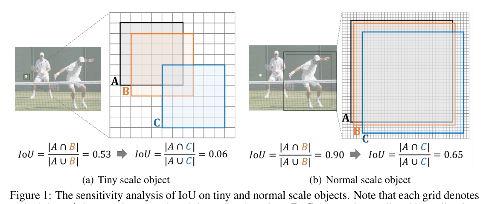
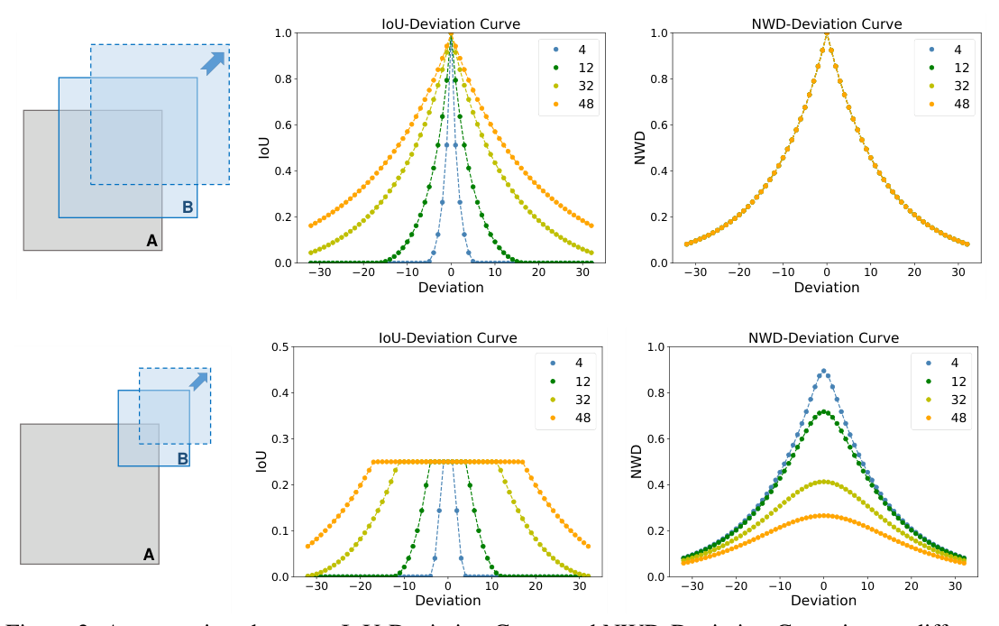
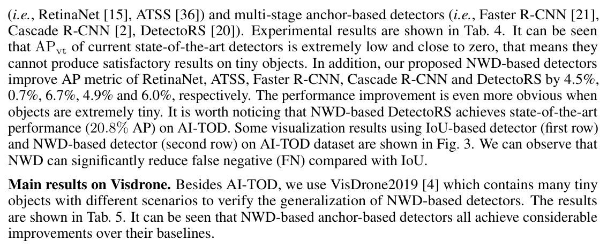
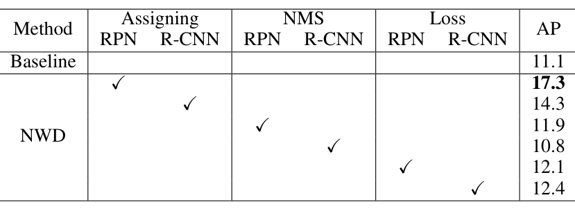
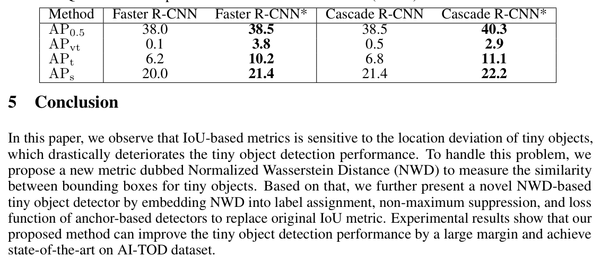
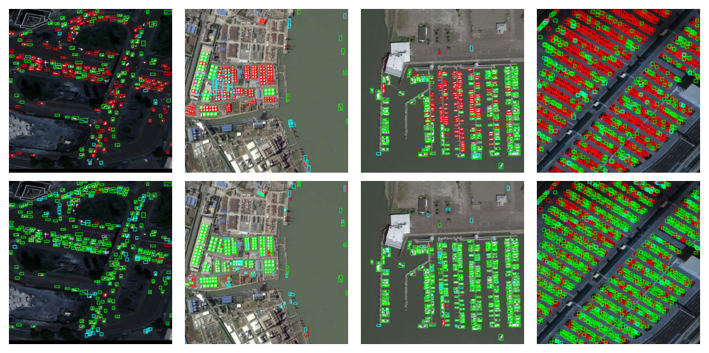

把边界框建模为二维高斯分布，用归一化 Wasserstein 距离替代 IoU 度量框间相似度，从度量层面解决微小目标检测的核心瓶颈。
以边界框的内切椭圆确定高斯分布的均值与协方差，把框相似度问题转化为分布距离问题。
对二阶 Wasserstein 距离做指数形式归一化，具备尺度不变、对位置偏差平滑、可度量无重叠框三项性质。
嵌入标签分配、NMS、回归损失三处，Faster R-CNN 的 AP 从 11.1 提升到 17.8。
NWD 版 DetectoRS 以 20.8% AP 取得 AI-TOD 当时最优结果，比标准微调基线高 6.7 个 AP。

μ = [cx, cy]T, Σ = diag(w2/4, i2/4)
以边界框 R = (cx, cy, w, h) 的内切椭圆确定高斯分布的均值与协方差，中心像素权重最高、向边界递减。
W22(Na, Nb) = ‖(cxa, cya, wa/2, ha/2) − (cxb, cyb, wb/2, hb/2)‖22
代入高斯参数后，距离简化为四维向量差的平方——计算极其简洁。
NWD(Na, Nb) = exp(−√(W22(Na, Nb)) / C)
C 是与数据集相关的常数（AI-TOD 中取平均绝对尺寸 12.8 像素）。指数归一化使度量值落在 [0, 1]，IoU=0.895 时不同尺度下完全一致。

沿用原阈值设定，仅把度量换成 NWD。正标签赋予 NWD 最高且大于阈值的 anchor，缓解正样本不足。
用 NWD 替换 IoU 作为 NMS 的抑制准则，克服尺度敏感问题，减少密集目标的误抑制。
LNWD = 1 − NWD(Np, Ng)，即使在无重叠或相互包含时仍能提供有效梯度。
IoU 系损失每个真值框平均匹配 0.72 个正 anchor，NWD 为 1.05 个——只有 NWD 能保证充足的正样本数量。




指出 IoU 对位置偏差过度敏感这一本质问题，把边界框建模为二维高斯分布并以 Wasserstein 距离度量相似度，使度量在无重叠时依然平滑有效。
可直接替换标签分配、NMS、回归损失三处的 IoU，仅需少量代码改动即适用于任意 anchor-based 检测器。
AI-TOD 上五种检测器一致提升、配合正 anchor 数统计与跨数据集 VisDrone2019 验证，增益来源清晰可信。